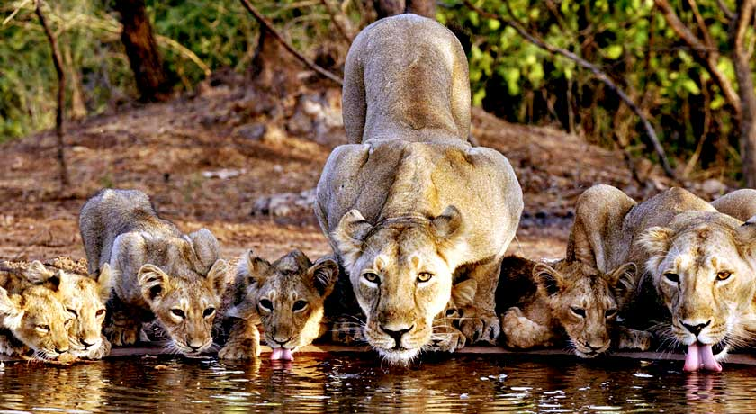

This forested, hilly, 1412-sq-km sanctuary about halfway between Veraval and Junagadh is the last refuge of the Asiatic lion (Panthera leopersica). Taking a safari through the thick, undisturbed forests is a joy – even without the added excitement of spotting lions, other wildlife and myriad bird species. Access to the sanctuary is by safari permit only, bookable in advance online.
If you miss out on a permit, your other option for lion encounters is at the Devalia Safari Park, a fenced-off part of the sanctuary where sightings are guaranteed but more stage-managed. The sanctuary’s 37 other mammal species, most of which have also increased in numbers, include dainty chital (spotted deer), sambar (large deer), nilgais (blue bull / large antelopes), chousinghas (four-horned antelopes), chinkaras (gazelles), crocodiles and rarely seen leopards. The park is a great destination for birders too, with more than 300 bird species, most of the residents. While the wildlife has been lucky, more than half the sanctuary’s human community of distinctively dressed maldhari (herders) have been resettled elsewhere, ostensibly because their cattle and buffalo were competing for food resources with the antelopes, deer, and gazelles, while also being preyed upon by the lions and leopards. About 1000 people still live in the park, however their livestock accounts for about a quarter of the lions diet.
Twelve kilometers west of Sasan Gir village at Devalia, within the sanctuary precincts, is the Gir Interpretation Zone, better known as simply Devalia. The 4.12-sq-km fenced-off compound is home to a cross-section of Gir wildlife. Chances of seeing lions and leopards here are guaranteed, with 45-minute bus tours departing along the trails hourly. You may also see foxes, mongoose, and blackbuck – the latter being lion fodder.
History
The sanctuary was set up in 1965, and a 259-sq-km core area was declared as a national park in 1975. Since the late 1960s, lion numbers have increased from less than 200 to 674 (Census 2020).
Best time to visit
In winter from November to March.

How to Get There?
By Road
Junagadh (60 km) and Veraval (45 km) have bus connectivity to national park.
By Train
Junagadh (71km) and Veraval (42 km) are the major rail heads from the national park. Sasan Railway Station(Meter Gauge Train) on Junagadh to Delvada Route
By Air
The closest airport to Gir National Park is Keshod, nearly 54 km away.